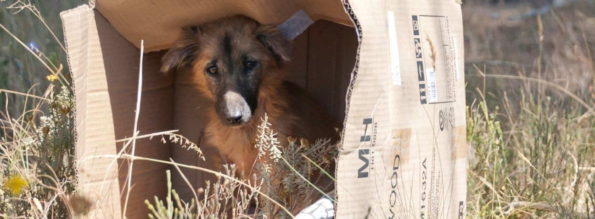

Un programa inclusivo y participativo que fomenta la castración masiva, la sanidad de los animales y la tenencia responsable de mascotas.
Cuidar a tus mascotas es querer a tu ciudad.
Castrar es la única opción real para evitar que sigan naciendo animales destinados a sufrir. Nuevos nacimientos significan nuevos abandonos.

Existe un gran número de animales que son abandonados por sus dueños cada año.
Miles de ellos deambulan por las calles padeciendo hambre, enfermedades, accidentes y siendo víctimas de maltrato.
La esterilización
es la única y mejor manera de mantener controlada la población animal, además ayuda a evitar problemas de salud a tu mascota.

Salvá vidas.
La protección de los animales y el bienestar de los mismos es un problema social que requiere la participación responsable de cada ciudadano.
- La castración o esterilización es el método más efectivo que existe para evitar la superpoblación de animales, el nacimiento de crías que jamás encontrarán un hogar y el abandono.
- Evita el vagabundeo en machos.
- Disminuye el riesgo de que se extravíe o tenga un accidente.
- Mejora el carácter y evita que se pelee con otros animales.
- No es necesario esperar a que las hembras tengan una primera cría para poder realizar la cirugía.
- Los machos no necesitan aparearse una vez antes de la castración.
- Reduce en gran porcentaje el riesgo de que padezcan cáncer de mama;
- elimina por completo los embarazos y el sangrado (celo);
- evita por completo el cáncer de útero, de ovarios, la piómetra (infección uterina);
- evita por completo que contraigan tumores de transmisión venérea.
- Reduce la incidencia de tumores en próstata;
- reduce y hasta puede llegar a eliminar el marcado de territorio con la orina;
- elimina los tumores testiculares;
- reduce el riesgo de contraer infecciones por mordeduras en peleas, sobre todo en gatos;
- evita por completo que contraigan tumores de transmisión venérea.